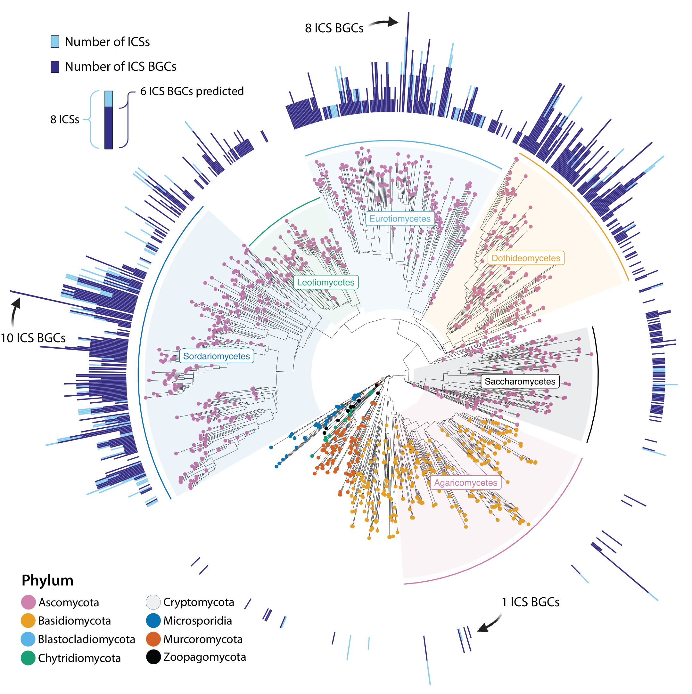

Published · Nucleic Acids Research
Mining for a new class of fungal natural products
The first large-scale characterization of isocyanide synthase (ICS) biosynthetic gene clusters, a class of fungal natural products previously invisible to conventional genome mining. My pipeline located over 3,800 ICS clusters, ranking them the fifth-largest class of fungal specialized metabolites. The antiSMASH team later built ICS detection into version 7.1 of their genome-mining tool.